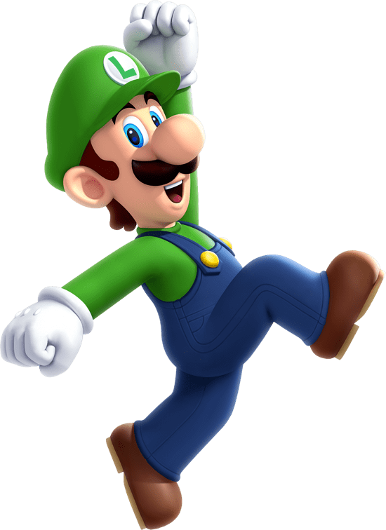
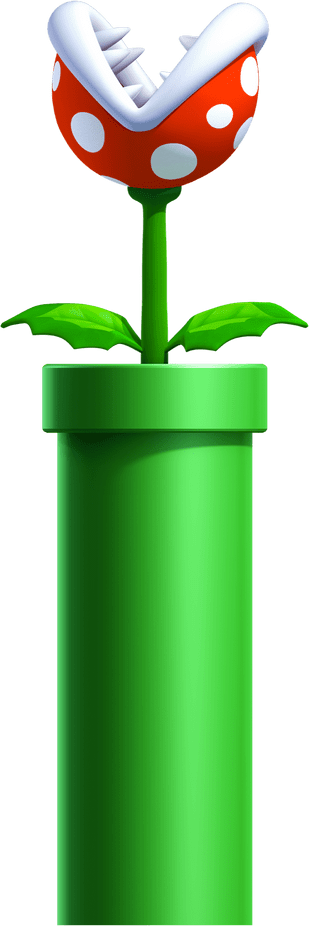

Review
Super Mario Bros Wonder

Super Mario Bros Wonder é a nova aposta da Nintendo para sua principal estrela em um novo título 2D, estilo que consagrou o personagem e onde a empresa faz escola a cada novo lançamento.
Super Mario Galaxy
Mario Galaxy 2 tem a mesma sensação, na minha opinião, que O Império Contra-Ataca. Ele pega tudo que tem de bom no primeiro, coloca algumas coisas a mais, mas sem exagero, e se transforma em algo marcante que nos faz pensar em tudo que o anterior poderia/deveria ter sido.
Notícias

22.06.2024
Ahhh, Evershade Valley. Um lugar sereno e produtivo para o Professor E. Gadd, um excêntrico pesquisador de fantasmas e inventor, trabalhar duro em seus projetos... bem, pelo menos era até que a mágica Dark Moon de repente se desfez. (Sério, quem pode prever algo assim?) Agora, os fantasmas amigáveis que estavam ajudando o professor de repente se tornaram hostis!

02.05.2024
O resort Universal Orlando revela novos detalhes emocionantes sobre sua experiência mais colorida e interativa até agora – SUPER NINTENDO WORLD – chegando ao Universal Epic Universe em 2025
Conheça o Mario ?
Se você é fã do Mario — ou mesmo se acabou de descobrir sobre ele hoje — você veio ao lugar certo! Aprenda tudo o que há para saber sobre essa maravilha multitalentosa e bigoduda, e confira as últimas notícias, vídeos e muito mais.

A história do Super Mario
Lançado: 18 de outubro de 1985
Plataforma: Nintendo Entertainment System
Um dia, o reino do pacífico povo cogumelo foi invadido pelos Koopa, uma tribo de tartarugas famosa por sua magia negra. O tranquilo e pacífico Povo Cogumelo foi transformado em meras pedras, tijolos e até mesmo plantas de crina de cavalo, e o Reino Cogumelo caiu em ruínas. A única que pode desfazer o feitiço mágico no Povo Cogumelo e devolvê-los ao seu eu normal é a Princesa Toadstool, a filha do Rei Cogumelo. Infelizmente, ela está atualmente nas mãos de Bowser, o Rei dos Koopa. Mario ouve sobre a situação difícil do Povo Cogumelo e parte em uma jornada para libertar a Princesa Cogumelo do maligno Koopa e restaurar o reino caído do Povo Cogumelo. Você é Mario! Cabe a você salvar o Povo Cogumelo da magia negra dos Koopa! 